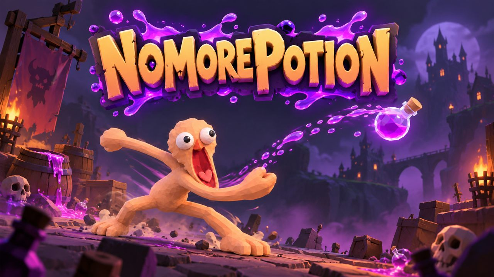
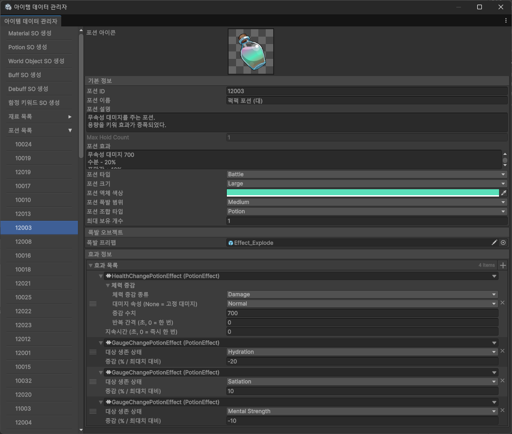
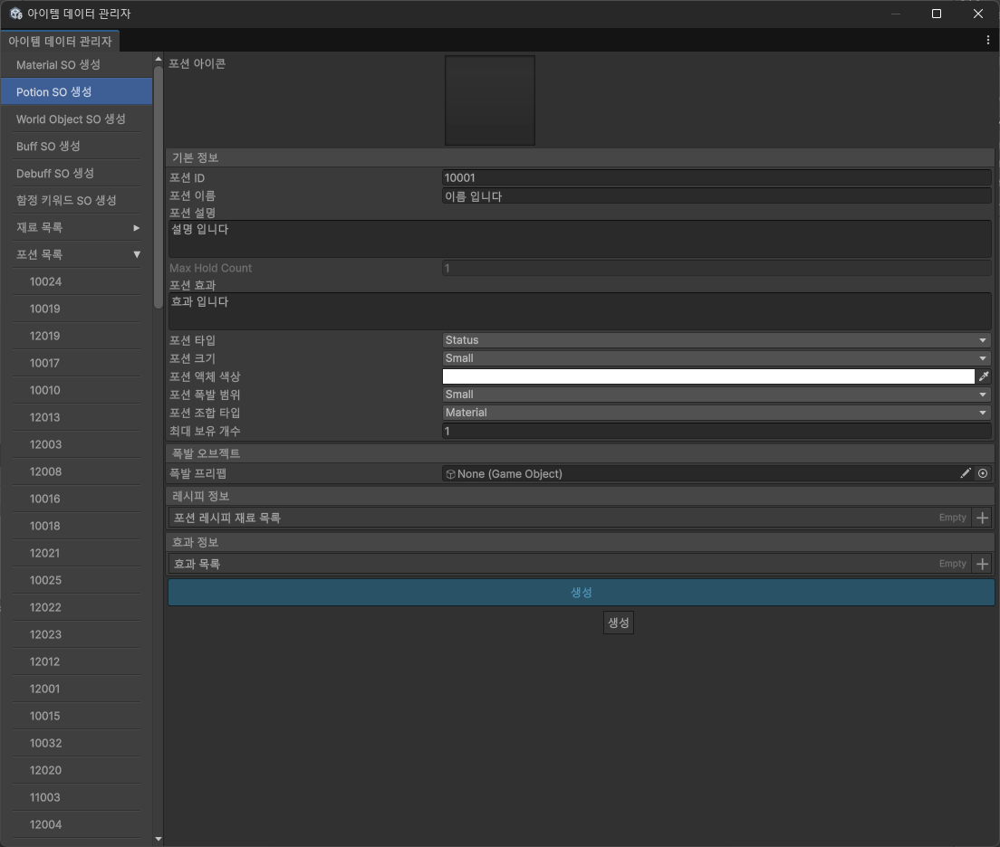
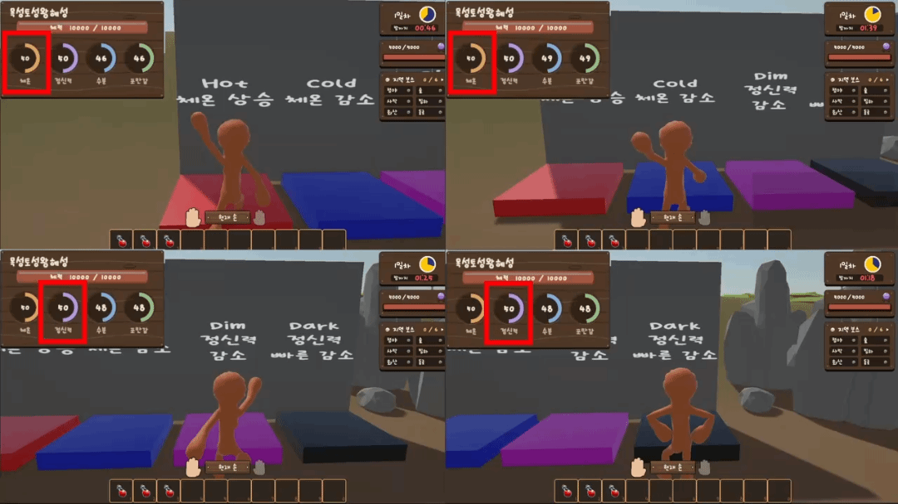
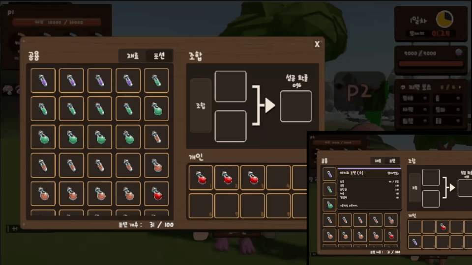
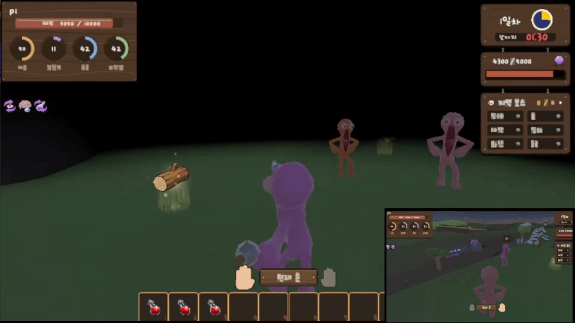
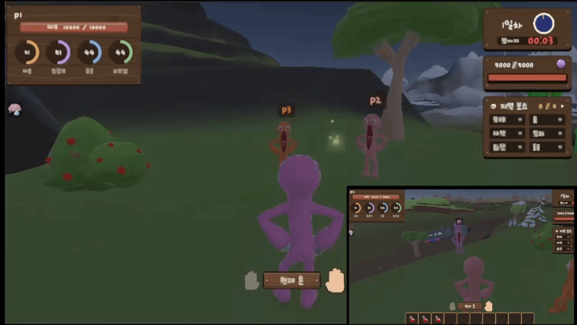
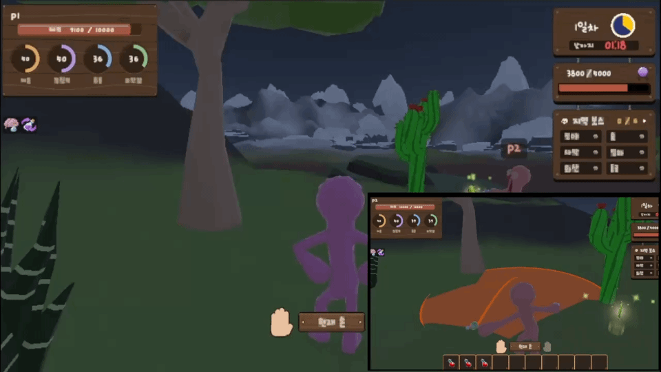
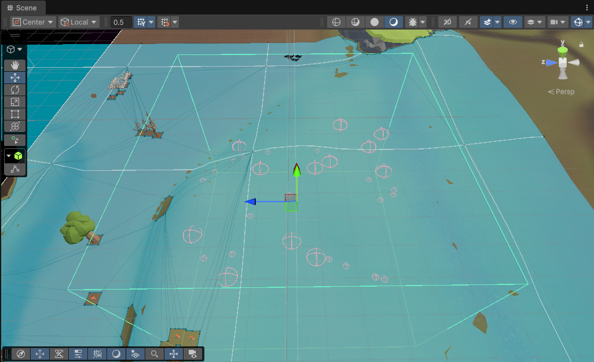
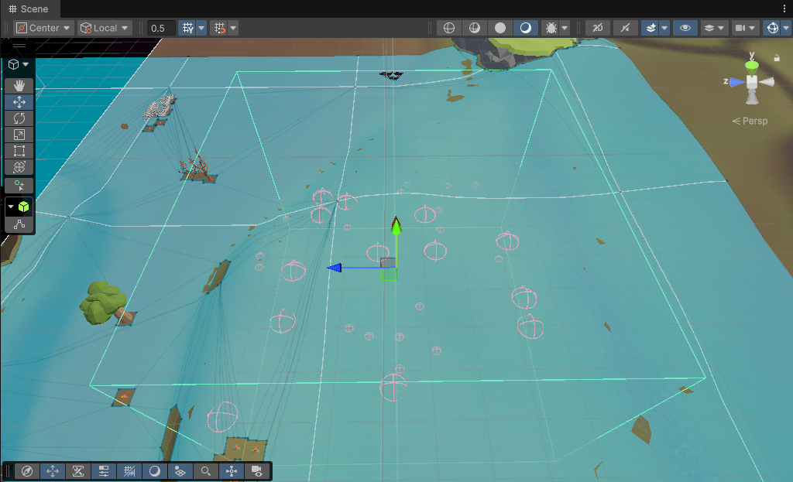

기업협약 팀 프로젝트 · CBT 제출 후 개발 중
NoMorePotion
포션 하나로 생존하는 멀티플레이 생존 액션. 기획 시트가 그대로 게임 데이터가 되고, 새 효과는 코드 수정 없이 데이터 조립으로 추가되는 구조를 만들었습니다.

- 기간
- 2026.11.02 ~ 진행 중 (CBT 빌드 제출 2026.11.12)
- 인원 · 역할
- 개발 4인 · 데이터 툴, 포션(조합·폭발·함정), 생존 상태·환경 지역, 버프/디버프, 인벤토리와 멀티플레이 동기화, 월드 오브젝트 자동 배치, 관련 UI·피드백
- 기술
- Unity 6000.3 · C# · ScriptableObject · Odin Inspector · UniTask · Photon PUN 2 · Unity Profiler
- 기여 규모
- 커밋 110개(팀 404개) · 담당 C# 93개 파일, 약 17,600줄 · SO 약 180개 자동 생성 (11.19 기준)
1. 이 프로젝트로 보여 드리는 것
| 강점 | 근거 | 결과 |
|---|---|---|
| 측정으로 증명한다 | 조합 조회 키의 박싱을 Profiler로 측정 후 IEquatable<T> 구현 | 10만 회 조회 할당 300,059건 / 6.9MB → 0 |
| 기획이 다루는 데이터 | 기획 시트(CSV) → SO 일괄 생성, 효과 문장 자동 해석 | SO 약 180개 생성, 효과 276개 해석 실패 0건 |
| 확장에 닫히지 않는 구조 | 효과를 클래스가 아닌 모듈 조립([SerializeReference])으로 설계 | 새 데이터 종류 추가 시 에디터 수정 11줄 |
| 네트워크를 모르는 규칙 코어 | 인벤토리·월드 오브젝트 규칙을 순수 C#으로 분리 | 에디터 시뮬레이션 72개 + PUN 오프라인 40개 통과, CBT 싱글에 같은 코드 사용 |
| 상태의 주인이 적용한다 | 내 플레이어는 각 기기, 몬스터·월드 오브젝트는 방장이 적용 | 온라인 2클라이언트에서 중복 대미지 없음 |
| 보내지 않고 맞춘다 | 배치를 시드 하나로 모든 기기가 계산 | 위치 메시지 없이 30개 배치 일치 |
2. 구조

3. 핵심 구현
① 기획자용 데이터 툴
Odin 에디터 창에서 SO를 만들고 고치며, 기획 시트(CSV)를 읽어 SO를 한꺼번에 생성합니다. 효과 문장("불 속성 대미지 250", "수분 + 5%")은 규칙 기반으로 효과 모듈로 바뀌고, 276개 중 실패 0건이었습니다.


{ID}.asset으로 저장됩니다.자세히
- 복붙되던 생성 코드를
IItemData+ 제네릭(CreateButton<T>)으로 통합 → 함정 키워드 메뉴 추가 시 수정 11줄 - 생성기는 이미 있는 에셋을 덮어쓰지 않고, 생성 후 YAML을 직접 열어 값을 확인
- ID 대역으로 종류 구분(포션 1xxxx · 재료 2xxxx · 월드 오브젝트 3xxxx · 함정 키워드 5xxxx · 상태 효과 6xxxx), ID 변경은
#if UNITY_EDITOR로 제한 - 포션 조합: 재료 ID를 정렬한 값 타입 키로 A+B = B+A를 O(1) 조회 (4. 성능 측정)
② 생존 상태와 환경 지역
체온·정신력·수분·포만감을 독립 매니저로 두고, 구간이 실제로 바뀔 때만 이벤트를 보냅니다. 맵의 환경 지역(더위·추위·어둠)에 들어서면 그 즉시 체온과 정신력이 변합니다.

자세히
- 값은 0~100 정수, 변경은
Increase / Decrease / Reset만 가능하고 모두 구간 판정을 거침 - 온도와 밝기를 따로 지정해 "추운 지역 안의 동굴"처럼 겹칠 수 있고, 겹치면 우선순위 → 안쪽(작은) 지역 순
- 각 기기가 자기 플레이어만 판정하므로 네트워크 메시지 없음
- 트리거 대신 박스 계산 + 0.5초 주기 검사 → 다른 탐지에 끼어들지 않고, 사망·순간이동 때 나가기 이벤트를 놓치지 않음
③ 버프/디버프 — 클래스를 늘리지 않는 효과 시스템
효과 하나 = SO 하나 + 조립식 모듈(수치 보정 · 체력 증감 · 주기 행동 · 제조 실패 확률). 기획이 드롭다운으로 모듈을 조립하므로 효과를 추가할 때 프로그래머가 필요 없습니다.
자세히
- 런타임
BuffContainer: 중첩 정책, 곱연산 배율 캐싱, 건 주체(source) 기록으로 여러 출처의 같은 디버프가 서로 지우지 않음 - 생존 상태 구간이 바뀌면 새 목록에 없는 효과만 제거, 없는 효과만 적용 → 유지되는 효과의 주기 타이머가 초기화되지 않음
- 주기 행동(추위 이동 정지, 허기 아이템 소모)은 컨테이너가 시점만 알리고 행동은 받는 쪽이 처리
- 틱이 필요한 효과가 있을 때만
Update를 켜서 유휴 비용이 없음
④ 포션 폭발과 함정 포션
마시기는 "내 위치에서 폭발"로 처리해 마시기·던지기가 같은 경로를 씁니다. 함정 포션은 제작 순간 정신력으로 실패를 판정해 원래 포션에 키워드(13종)가 붙고, 폭발 함수에 인자 하나를 더해 적용합니다.
자세히
- 범위 탐색 / 대상 적용 / 던져진 오브젝트로 책임을 나누고,
OverlapSphereNonAlloc+ 재사용 버퍼로 할당 없이 탐색 - 같은 포션도 함정 여부가 달라 SO가 아닌
PotionInstance로 한 개씩 보관 - 제작 코드는 실패 확률을 인자로 받기만 해, 확률 규칙이 바뀌어도 그대로
⑤ 인벤토리 동기화 (PUN 2)
공용 인벤 · 개인 10칸(퀵슬롯) · 창고 · 시체 상자 · 바닥 재료를 모두 같은 방식으로 다룹니다. 경로가 하나뿐이라 보관 장소가 늘어도 동기화 코드는 늘지 않았습니다.
- 요청요청 번호 포함
- 마스터 검증확정값 생성
- 전원 적용사본 버전 +1


자세히
- 보관 장소는 모두
ContainerRef(종류, 번호, 칸)로 가리키고, 적용은 "변경 목록(절대값)" 한 번 - 사본이 어긋나면 적용하지 않고 마스터에게 전체 목록을 다시 받음
- 꺼내기는 위치가 아니라 ID로 요청해 동시에 같은 포션을 집어도 한 명만 성공. 랜덤과 ID 발급은 마스터만
- 개인 칸 안의 이동만 화면에 먼저 반영하고, 거부되면 전체 목록으로 바로잡음
- 창고는 공용 인벤과 같은 패널·같은 경로에 "베이스캠프 안인가" 판정만 추가
- 사망 시 개인 인벤을 먼저 비운 뒤(복제 방지) 상자를 만들고, 공용 인벤·창고는 남음
- 공용 인벤 변화는
(종류, ID, 변화량)이벤트로 모아서 알림 → 팀원의 획득 알림창이 구독 - 규칙 코어가 네트워크를 몰라 에디터에서 마스터 1 + 클라이언트 2를 흉내 내어 시험
⑥ 포션 폭발 멀티플레이 — 상태의 주인이 적용한다
던진 기기는 폭발 순간의 정보만 RPC로 알리고, 모든 기기가 폭발을 재생합니다. 효과는 그 상태를 가진 쪽만 적용해 대미지가 인원수만큼 겹치지 않습니다.
| 대상 | 누가 적용하나 |
|---|---|
| 내 플레이어 | 각 기기 |
| 몬스터 · 월드 오브젝트 | 방장만 |
| 남의 플레이어 | 적용 안 함 (피격 연출만 근사 재생) |

자세히
- RPC에는 위치, 포션 ID, 함정 키워드, 던진 사람의 공격력 배율만 담음
- 키워드는 폭발 순간에만 보내 날아가는 동안 함정 여부가 드러나지 않고, 배율은 받는 쪽에서 0~3으로 제한
⑦ 월드 오브젝트 자동 배치 — 보내지 않고 같은 결과를 만든다
방장은 시드 하나만 공유하고, 각 기기가 같은 규칙으로 배치를 계산합니다. 네트워크 번호도 계산 순서로 정해 모든 기기에서 같은 번호가 같은 오브젝트를 가리킵니다.



자세히
- 기기마다 결과가 갈릴 수 있는 지점을 막음: 전역
UnityEngine.Random대신 지역별System.Random, 프로세스마다 달라지는string.GetHashCode사용 안 함, 지역은 목록 순서로 순회, 못 놓은 자리도 번호를 건너뜀 - 위치 판정은 씬에 고정된 것(지면 · 경사 · NavMesh · 금지 구역)만 쓰고, 전부 계산한 뒤에 생성
- 소진 드롭은 방장이 한 번만 굴리고, 판마다 새 방이라 시드도 판마다 새로 정해짐
4. 성능 측정: 조합 키의 박싱 제거
구조체 키에 IEquatable<T>가 없어 조회 1회당 약 3건의 힙 할당이 생겼습니다. 구현 후 10만 회 조회 기준 300,059건 / 6.9MB → 할당 원인 목록에서 사라짐 (Profiler, Unity 6000.3 에디터).


코드 — 수정 전 / 수정 후
// 수정 전: 비교 방법을 제공하지 않아 Dictionary 가 기본 비교(박싱 가능)를 사용
public struct PotionRecipeSet
{
public int firstIngredientID;
public int secondIngredientID;
}
// 수정 후
public struct PotionRecipeSet : IEquatable<PotionRecipeSet>
{
public int firstIngredientID;
public int secondIngredientID;
public bool Equals(PotionRecipeSet other)
=> firstIngredientID == other.firstIngredientID
&& secondIngredientID == other.secondIngredientID;
public override bool Equals(object obj) => obj is PotionRecipeSet other && Equals(other);
public override int GetHashCode() => HashCode.Combine(firstIngredientID, secondIngredientID);
}5. 트러블슈팅
SO 데이터가 에디터 재시작 후 기본값으로 돌아감
- 원인:
[ShowInInspector]만 있고[SerializeField]가 없어 표시는 되지만 저장되지 않음 - 해결·교훈:
[SerializeField]로 교체. 화면에 보이는 것과 저장되는 것은 다르므로 데이터 작업 검증에 YAML 확인을 추가
곱연산 중첩 수치가 기획 의도와 다름
- 시야 −20%와 −90%가 겹치면 0.8 × 0.1 = 0.08로 약 92% 감소
- 정수 퍼센트로 −87.5%를 표현할 수 없어 합이 가장 가까운 −88%로 기획과 조정
방장 기기에서만 폭발 이펙트가 약 3초 늦게 사라짐
- 원인:
Maximum Allowed Timestep이 0.02초라 프레임이 긴 기기에서 게임 시간이 실제보다 느리게 흐름 - 해결: 기본값 0.3333으로 복구. "두 기기의 차이"를 초 단위로 잰 것이 코드가 아니라 설정을 의심한 단서
자동 배치한 오브젝트와 떨어진 재료가 주워지지 않음
- 대미지(번호로 방장에게 요청)는 되는데 줍기만 안 됨 → 번호 문제가 아니라 줍기 탐지를 추적
- 원인: 줍기는 트리거까지 포함해 가장 가까운 콜라이더를 고르는데, 배치 지역의 큰 트리거 박스 안에서는 거리가 0이라 항상 그 박스가 잡힘
- 해결: 배치 계산이 끝나면 지역 콜라이더를 끔. 이후 환경 지역은 처음부터 콜라이더 없이 구현
코드 검토로 먼저 막은 배치 결함
- NavMesh는
OnEnable에서 등록되므로Awake에서 배치하면 기기마다 결과가 달라질 수 있음 →Start로 옮기고 실행 순서를 앞당김 - PUN 오프라인에서는 방 프로퍼티 콜백이 즉시 불려 두 번 배치될 수 있음 → "배치함" 표시를 시드 결정보다 먼저
다중 클라이언트에서만 드러난 결함
- RPC를 받은 기기에 포션 인스턴스가 없어 범위 장판에서 NullReference → 받은 기기도 인스턴스를 만들어 초기화
- 이펙트 반납을 방장만 실행하는 스케줄러에 맡겨 다른 기기에 장판이 남음 → 각 기기가 직접 반납
- 교훈: 규칙 문제는 시뮬레이션에서 잡히지만, "누가 실행하는가"의 문제는 실제 다중 클라이언트에서만 드러난다
6. 현재 상태와 다음 단계
검증: 에디터 시뮬레이션 → PUN 오프라인 → CBT 싱글 빌드 → 실제 온라인 다중 클라이언트
- 3~5명 항목별 시험
- OBT 준비와 CBT 피드백 반영
- 출시 전 정리: 테스트 지급 끄기, 데이터 검증 버튼